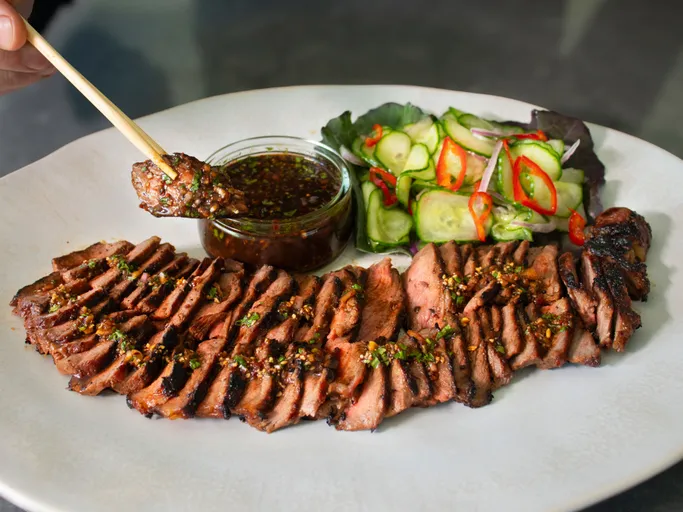

Crying Tiger Steak

Description
This Thai-flavored crying tiger steak is simply delicious. If you leave the marinade on the steak, it will char pretty substantially when grilling, but that will add extra flavor.
Prep Time: 30 minutes
Cook Time: 10 minutes
Marinate Time: 6 hours
Total Time: 6 hours 40 minutes
Servings: 2
Ingredients
Steak and Marinade
- 1 (14 ounce) NY strip steak, trimmed
- 3 cloves garlic, crushed
- 1 tablespoon vegetable oil
- 1 tablespoon soy sauce
- 1 tablespoon oyster sauce
- 1 teaspoon fish sauce
- 1 teaspoon sugar
- 1 teaspoon freshly ground black pepper
- 1/2 lime, juiced
Dipping Sauce
- 1 tablespoon uncooked rice
- 1 tablespoon tamarind paste
- 2 tablespoons shallots
- 2 tablespoons chopped cilantro
- 1/2 teaspoon chili flakes, or to taste
- 2 teaspoons sambal
- 1 tablespoon fish sauce
- 1 lime, juiced
- 1 teaspoon white sugar
- 1 teaspoon brown sugar
- 2 teaspoons water (optional)
;
Instructions
- Combine garlic, oil, soy sauce, oyster sauce, fish sauce, sugar, black pepper, and lime juice in a small shallow dish. Whisk to combine. Transfer in the steak and toss it in the marinade until it's well coated. Poke steak all over with a fork to help the marinade penetrate and spoon some marinade from the sides on top of the steak as well.
- Wrap dish and refrigerate for a minimum of 4 to 6 hours, preferably overnight. Flip the steak over occasionally while marinating if possible.
- For the dipping sauce, add raw rice to a small dry pan placed over medium heat. Toast rice while stirring and tossing until it’s a deep golden brown color. Remove pan from heat and transfer toasted rice into a mortar and pestle. Let rice cool for a couple minutes, then grind into a slightly coarse powder. Reserve until needed.
- Combine tamarind paste, shallot, cilantro, chili flakes, sambal, fish sauce, lime juice, white sugar, brown sugar, and water (if needed) in a small bowl. Stir in toasted rice powder, reserving about 1 teaspoon for the garnish if desired. Whisk dipping sauce ingredients together until well combined and refrigerate until needed.
- Remove steak from the marinade and allow excess marinade to drip off.
- Reheat an outdoor grill for high heat and lightly oil the grate.
- Grill your steak to a medium doneness for best results, about 3 minutes per side.
- Remove from grill and let the steak rest for 5 minutes. Slice into thin strips. Fan the strips out for a nicer presentation, and serve with the dipping sauce, garnish with the reserved toasted rice powder.